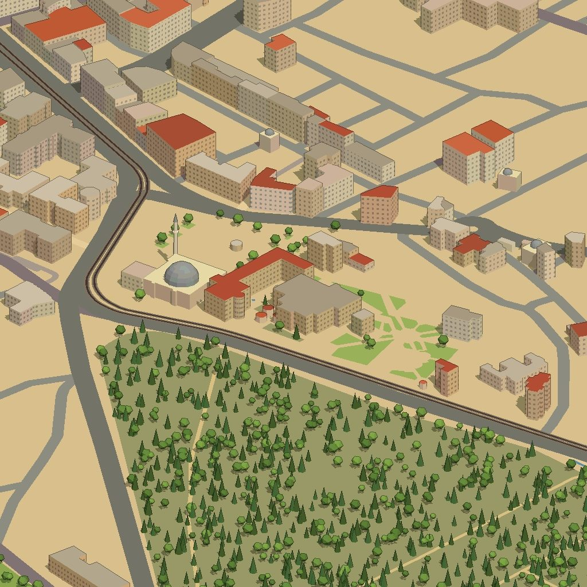
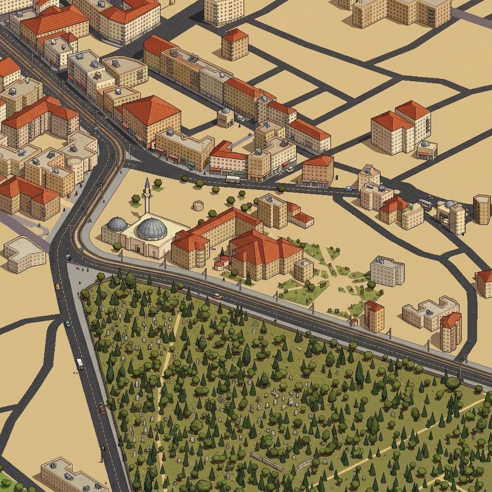

1
Kutu binalarla ilk deneme
Bina ayak izlerini kutu olarak yükseltip izometrik bir görüntü aldık, yapay zekâya piksel art olarak yeniden çizdirdik.


SorunZemin boş, meydan ve yollar uydurma. Veride olmayan evler hiç yok.
Sonraki adımZemine uydu fotoğrafı kaplamak.